TEST PHOTO
गांव की फोटो
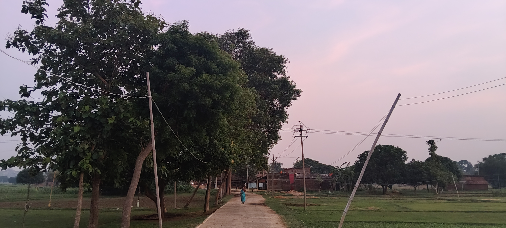
🎥 रोपामोर गांव का वीडियो
गांव के बारे में
रोपामोर एक सुंदर गांव है। यहां हरियाली, खेत और शांत वातावरण है। गांव के लोग मेहनती और मिलनसार हैं। यह वेबसाइट रोपामोर गांव की जानकारी और सूचनाओं के लिए बनाई गई है।
🌾 रोपामोर फसल कैलेंडर
🌱 धान (Paddy): जून - जुलाई में बुवाई, नवंबर - दिसंबर में कटाई।
🌾 गेहूँ (Wheat): नवंबर - दिसंबर में बुवाई, मार्च - अप्रैल में कटाई।
🌿 चना (Gram): अक्टूबर - नवंबर में बुवाई, फरवरी - मार्च में कटाई।
🌱 मूंग (Moong): मार्च - अप्रैल में बुवाई, जून - जुलाई में कटाई।
🌽 मक्का (Corn): जून - जुलाई में बुवाई, सितंबर - अक्टूबर में कटाई।
🚜 मुख्य फसलें: धान, गेहूँ, चना, मूंग और मक्का।
महत्वपूर्ण नंबर
एम्बुलेंस: 108
पुलिस: 112
सरपंच: यहाँ नंबर लिखें
सूचनाएँ
✅ गांव की मुख्य सड़क की मरम्मत का कार्य पूरा हो चुका है।
📚 मिडिल स्कूल रोपामोर में पुस्तकालय शुरू करने की तैयारी चल रही है।
🤝 पुस्तकालय कार्य से जुड़े सदस्य:
• अंकित यादव
• लालू यादव
• नितीश यादव (निटू)
• राजीव यादव
🏫 स्कूल की जानकारी
मिडिल स्कूल रोपामोर
यह विद्यालय गांव के बच्चों को शिक्षा प्रदान करता है।
📍 गांव की जानकारी
🏘️ गांव: रोपामोर
👨👩👧👦 कुल जनसंख्या: 1310
🏠 कुल घर: 231
🏛️ पंचायत: दरियापुर 1
🏢 प्रखंड: हवेली खड़गपुर
📍 जिला: मुंगेर
📮 पिन कोड: 811213
🏛️ प्रशासनिक जानकारी
👩 मुखिया: रेणु देवी
👩 सरपंच: निर्मला देवी
👨 वार्ड सदस्य: सत्यनारायण ठाकुर
👮 थाना: गंगटा मोड़
📮 डाकघर: दरियापुर 1
🎉 प्रसिद्ध त्योहार
🌞 छठ पूजा हमारे गांव का सबसे प्रसिद्ध और महत्वपूर्ण पर्व है। इस अवसर पर पूरे गांव में श्रद्धा, स्वच्छता और उत्साह का माहौल रहता है।
🎯 हमारा लक्ष्य
इस वेबसाइट का उद्देश्य रोपामोर गांव से बाहर रहने वाले गांव के लोगों को अपने गांव से जुड़े रहने का अवसर देना है। यहां गांव की जानकारी, समाचार, कार्यक्रम और यादें साझा की जाएंगी ताकि सभी लोग अपने गांव से जुड़े रहें।
🌟 हमारे गांव की विशेषताएं
🛣️ रोपामोर गांव की सड़कें अच्छी हैं और आवागमन की सुविधा बेहतर है।
🎓 आसपास के गांवों की तुलना में रोपामोर में शिक्षित लोगों की संख्या अधिक है।
🌾 गांव के अधिकांश लोग खेती से जुड़े हैं।
🤝 गांव के लोग मिलनसार और मेहनती हैं।
🌳 गांव का वातावरण शांत और हरियाली से भरपूर है।
🏆 हमारे गांव के गौरव
👨🏫 शिक्षक: देवनंदन यादव
👨⚕️ डॉक्टर: S.K. Suman (संजय यादव)
👨💻 इंजीनियर: रविकांत यादव
🏦 बैंक मैनेजर: रविकांत यादव
🚆 रेलवे: राजकुमार यादव (मोनाज यादव)
🏭 मुंगेर सिगरेट फैक्ट्री: अमरदीप यादव (छोटू कुमार)
👮 इंस्पेक्टर: धर्मेंद्र यादव
📸 फोटो गैलरी
🌳 गांव की हरियाली
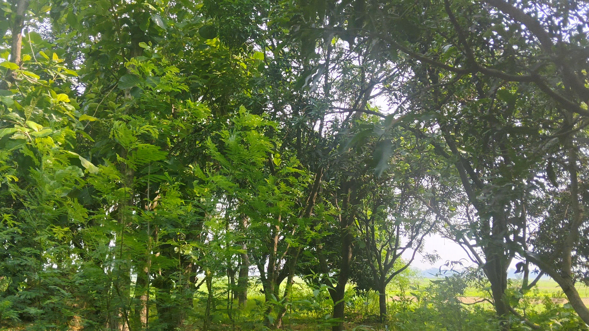
🌾 खेत और कृषि
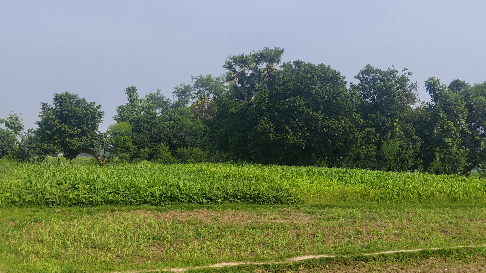
🌾 खेत का दृश्य
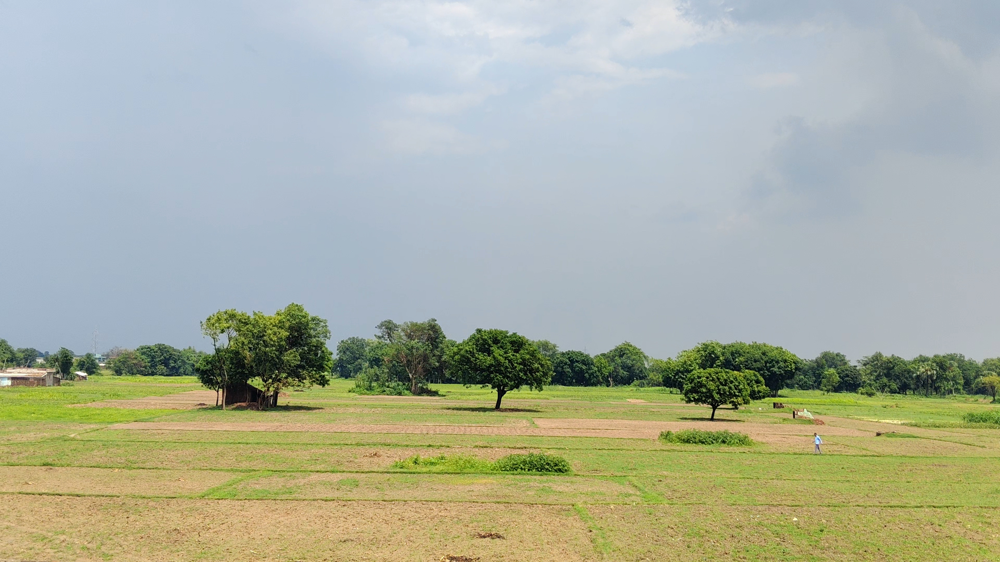
🚪 गांव का प्रवेश द्वार
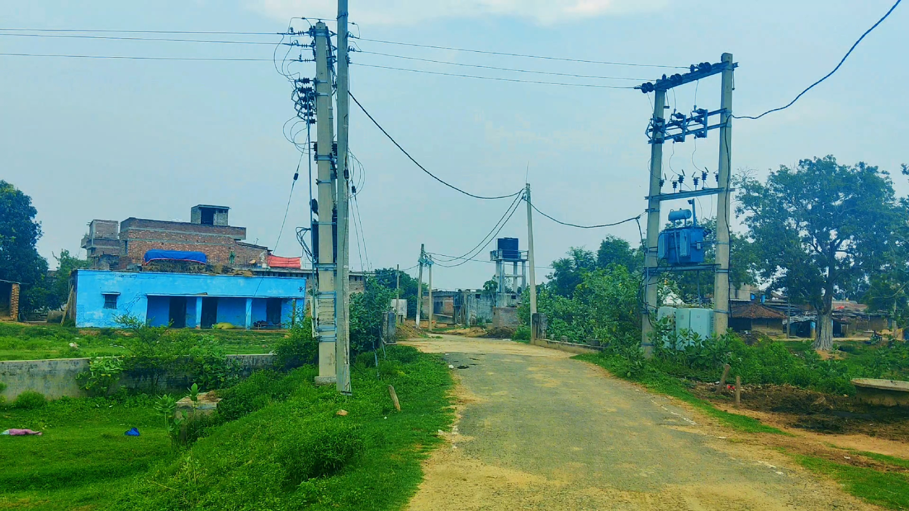
🏫 मिडिल स्कूल रोपामोर
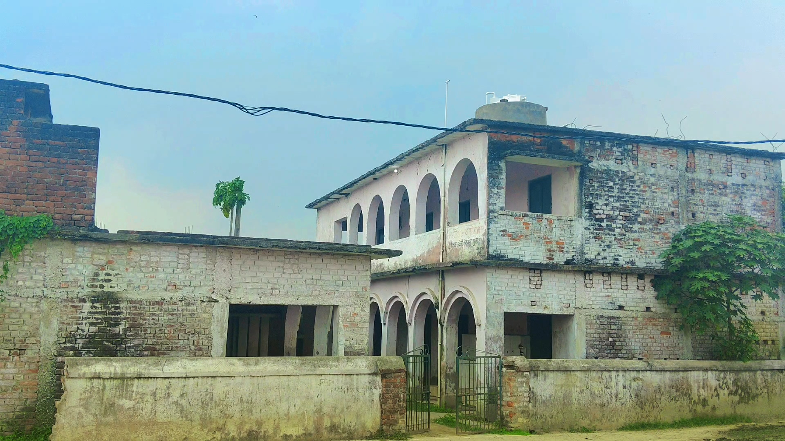
🏛️ काली मंदिर
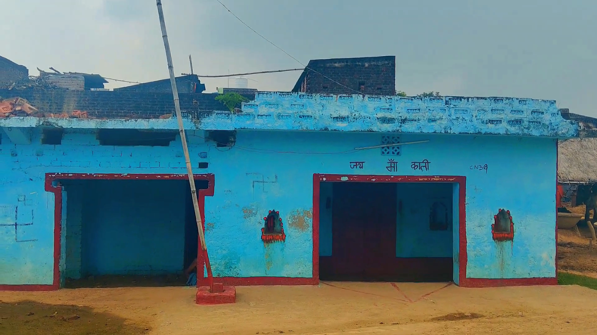
🛕 सीतला मंदिर
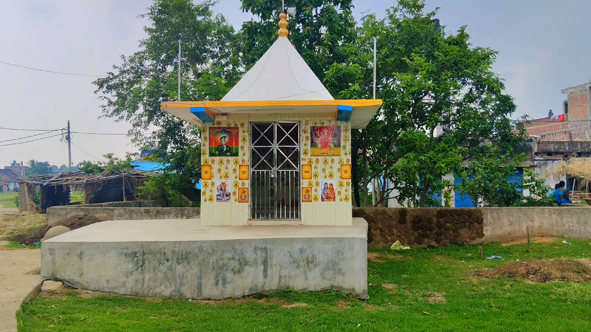
🛕 हनुमान मंदिर
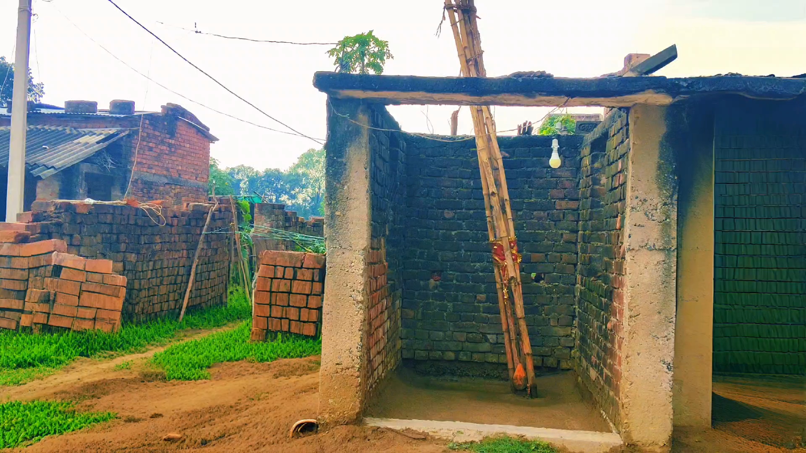
🏞️ कठिया नदी
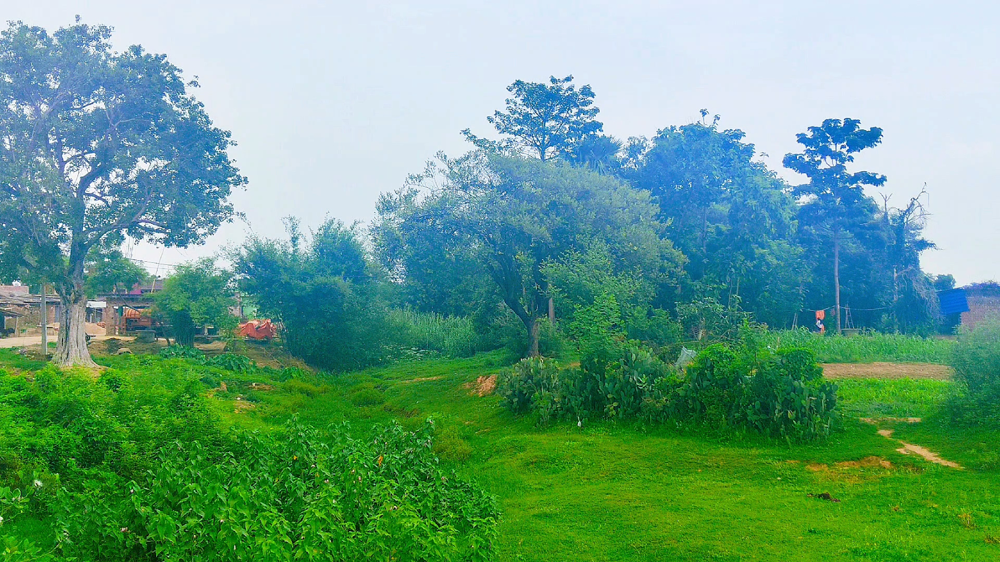
🏪 निवास यादव किराना स्टोर
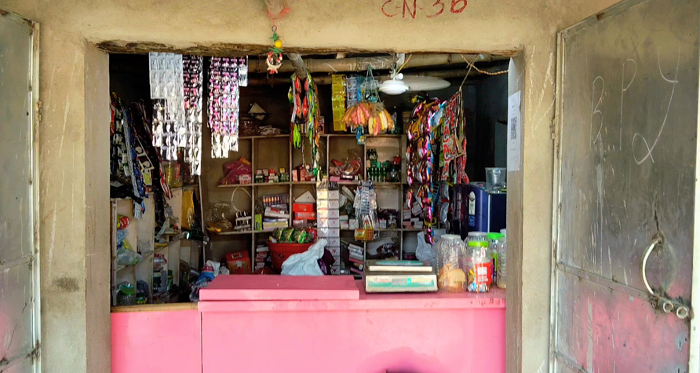
🏠 गांव के मकान
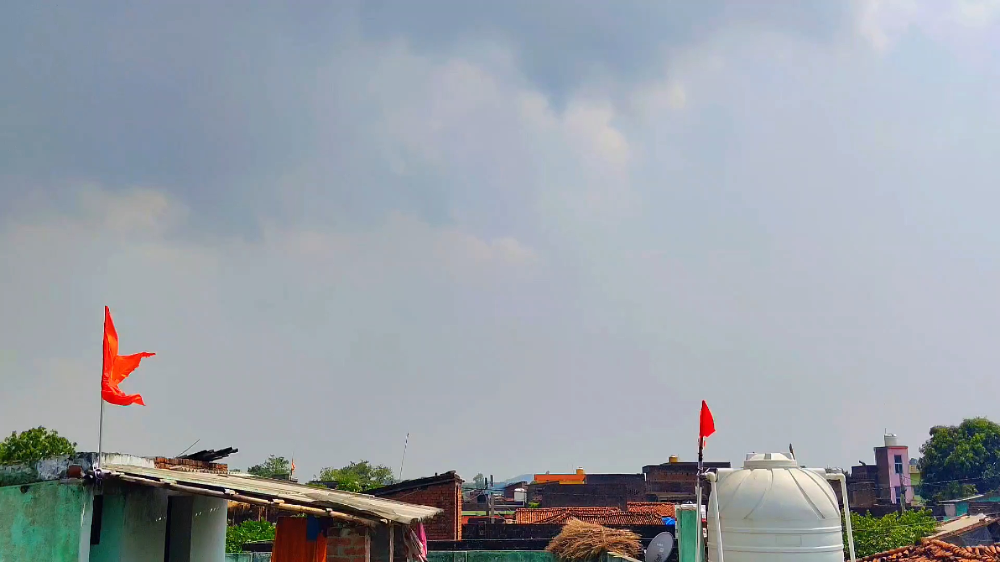
🌅 गांव का सुंदर दृश्य
🏡 Needs of Village
🚜 किसानों को आधुनिक कृषि उपकरणों और नई तकनीकों से परिचित कराया जाए।
🚭 युवाओं को नशा मुक्त बनाने के लिए समय-समय पर काउंसलिंग और जागरूकता कार्यक्रम चलाए जाएँ।
🪑 गांव के विभिन्न स्थानों पर सार्वजनिक बैठने के लिए कुर्सियाँ/बेंच लगाई जाएँ।
💡 रात के समय सुरक्षा और सुविधा के लिए सार्वजनिक लाइटों की व्यवस्था की जाए।
📚 गांव में पुस्तकालय को और विकसित किया जाए ताकि विद्यार्थियों को अध्ययन की बेहतर सुविधा मिल सके।
⚽ बच्चों और युवाओं के खेल-कूद तथा शारीरिक विकास के लिए एक अच्छे खेल मैदान (Playing Ground) की व्यवस्था की जाए।
🏥 स्वास्थ्य सुविधा
❌ रोपामोर गांव में वर्तमान में कोई स्वास्थ्य केंद्र (Health Care Center) उपलब्ध नहीं है।
🚑 इलाज के लिए ग्रामीणों को अन्य स्थानों पर जाना पड़ता है।
📌 गांव की प्रमुख आवश्यकताओं में एक स्वास्थ्य केंद्र की स्थापना भी शामिल है।
🤝 भविष्य में गांव में बेहतर स्वास्थ्य सुविधाएँ उपलब्ध कराने का प्रयास किया जाना चाहिए।
🗺️ गांव का नक्शा
रोपामोर गांव की लोकेशन Google Maps पर देखने के लिए नीचे क्लिक करें:
📍 Google Maps पर रोपामोर गांव देखें📜 वेबसाइट का उद्देश्य
रोपामोर गांव से बाहर रहने वाले लोगों को अपने गांव से जोड़कर रखना, गांव की जानकारी साझा करना तथा गांव के विकास में सभी की भागीदारी बढ़ाना।
❤️ गांव का संदेश
"हमारा गांव, हमारी पहचान। आइए मिलकर रोपामोर को और बेहतर बनाएं।"
👨💻 Website Developers
🌟 Anshuman Yadav
Founder & Main Developer
🌟 Prince Yadav
Co-Developer & Supporter